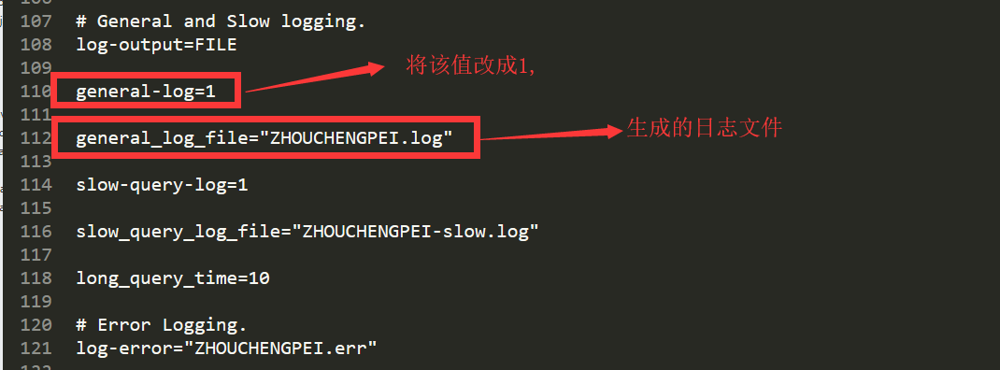
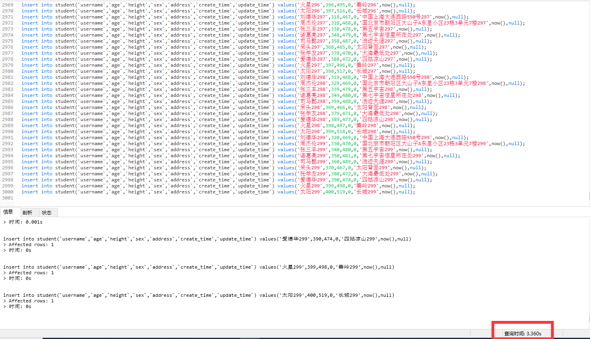
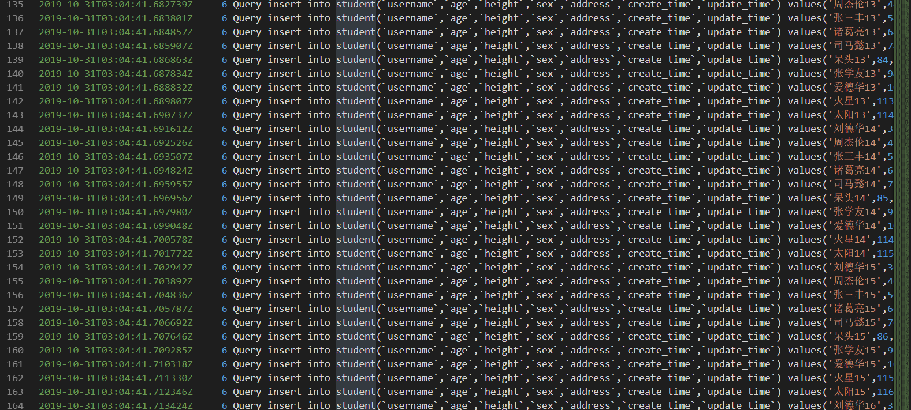
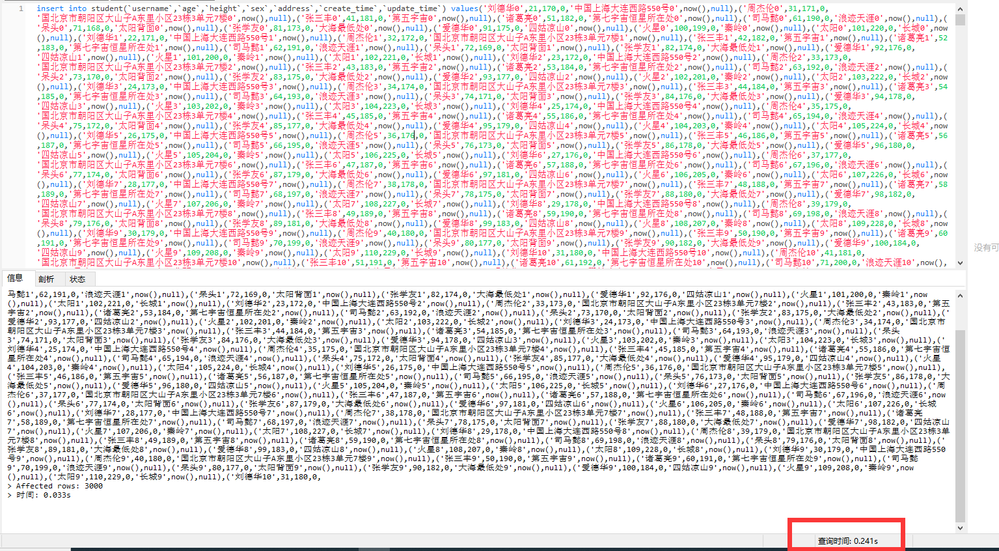
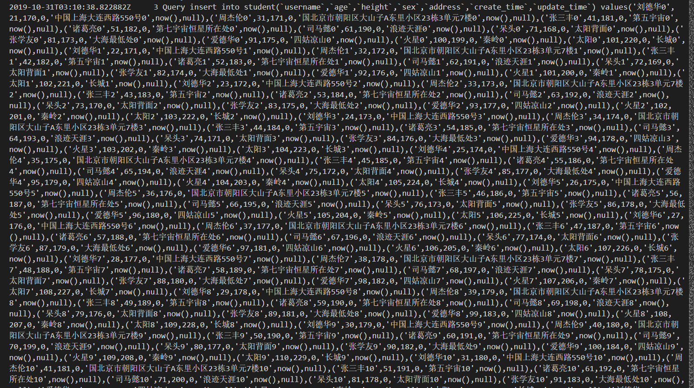
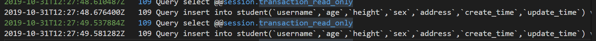
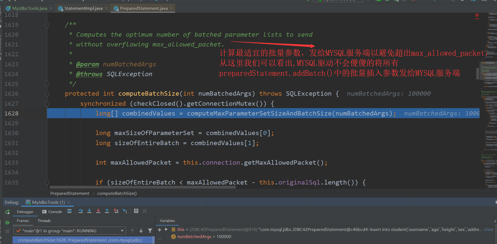
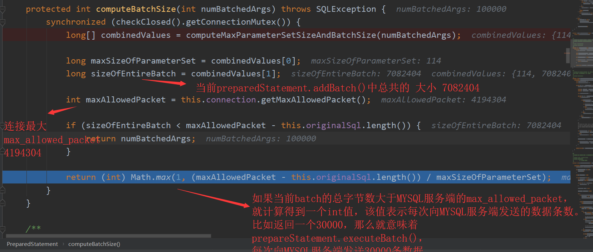
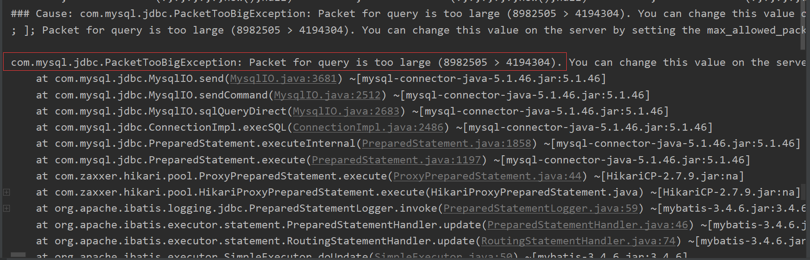
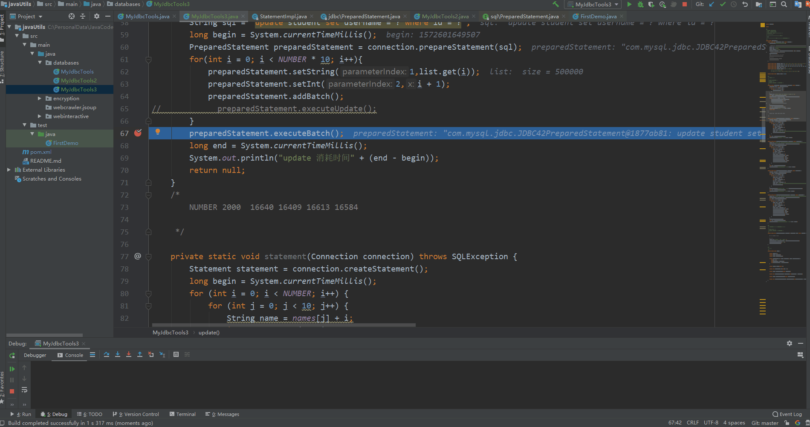

目录
最近在极客时间买了几个专栏，MYSQL实战45讲，SQL必知必会，如果你想深入MYSQL的话，推荐你看MYSQL实战45讲，非常不错，并且一定要看留言区，留言区的质量非常高，丁奇老师太太太负责任了，我在极客时间买了不少课程，丁奇老师对大部分评论都进行了回答，这是在其他专栏中很少见的，文章的内容+留言区的问题+丁奇老师的解答都非常不错。这是目前为止我在极客时间买到的最好的课程。
当然如果你想入门SQL，你可以看下SQL必知必会，该专栏比较简单，属于SQL入门课程。
随着时代的变迁，我越发觉得数据变得越来越重要，无论是大数据、还是人工智能、物联网，本质上都是数据在起作用。大数据是涉及从大量数据中收集，存储，分析和获取的通用平台。人工智能和机器学习是两种更智能更有效的方式筛选数据和信息的技术。移动和物联网设备用于从客户，用户和受众收集数据。
因此最近我一直在研究MYSQL和JDBC的高级用法，形成本篇博客，与大家一起分享。关于MYSQL和JDBC的简单用法和概述，大家可以参考其他博客，我就不重复造轮子了。
找到 my.ini 文件，我的电脑上是在 C:\ProgramData\MySQL\MySQL Server 5.7目录下

然后重启MYSQL服务器，在my.ini同级的Data目录下，你就可以看到 该日志文件。
在url后面一定写rewriteBatchedStatements=true，开启批处理。
类似于：jdbc:mysql://127.0.0.1:3306/aaa?characterEncoding=UTF8&useUnicode=true&rewriteBatchedStatements=true
MYSQL 插入 就两种形式
对比一下插入效率，3000条数据，数据都是一样的。
第一种：首先插入3000条数据，3000个insert，在navicat执行，耗时3.360s

然后在服务端看日志，会发现mysql，是一条一条逐步insert的，总共服务端执行3000次insert

第二种：插入3000条数据，一个insert，在navicat执行，耗时0.241秒

然后看服务端日志，会发现mysql，是批量插入的，只有一个insert，多个values

这应该非常容易理解，按照计算机理论知识，批量插入效率铁定比单条插入效率高。
注意，如果批量插入中间出现错误，那么整个insert会失败，不会插入任何数据，及该条insert批量插入是一个事务操作，要么全部插入成功，要么全部都插入失败
由于SQL注入等问题，Statement已经用的很少了，JDBC我们主要讲preparedStatement的批量插入，核心代码如下所示：
private static final String[] names = {"刘德华", "周杰伦", "张三丰", "诸葛亮", "司马懿", "呆头", "张学友", "爱德华", "火星", "太阳"};
private static final Integer[] ages = {21, 31, 41, 51, 61, 71, 81, 91, 100, 101};
private static final Integer[] heights = {170, 171, 181, 182, 190, 168, 173, 175, 199, 220};
private static final Byte[] sexs = {0, 1};
private static final String[] address = {"中国上海大连西路550号",
"国北京市朝阳区大山子A东里小区23栋3单元7楼",
"第五宇宙", "第七宇宙恒星所在处", "浪迹天涯", "太阳背面", "大海最低处", "四姑凉山", "秦岭", "长城"};
private static final Integer NUMBER = 100000;
private static void prepareStatementBatch(Connection connection) throws SQLException {
String sql = "insert into student(`username`,`age`,`height`,`sex`,`address`,`create_time`,`update_time`) values(?,?,?,?,?,now(),null)";
PreparedStatement preparedStatement = connection.prepareStatement(sql);
long begin = System.currentTimeMillis();
for (int i = 0; i < NUMBER; i++) {
String name = names[j] + i;
int age = ages[j] + i;
int height = heights[j] + i;
Byte sex = sexs[0];
String addre = address[j] + i;
preparedStatement.setString(1, name);
preparedStatement.setInt(2, age);
preparedStatement.setInt(3, height);
preparedStatement.setByte(4, sex);
preparedStatement.setString(5, addre);
preparedStatement.addBatch();
if ((i + 1) % 500 == 0) {
preparedStatement.executeBatch();
preparedStatement.clearBatch();
}
}
// 执行剩下的
preparedStatement.executeBatch();
long end = System.currentTimeMillis();
System.out.println("prepareStatementBatch 消耗时间:" + (end - begin));
}打开mysql服务器日志：我们可以看到就两条 insert语句，后面跟了很多values...，从第一个例子可以看出，这样的执行效率非常高。

上面的代码中出现了
if ((i + 1) % 500 == 0) {
preparedStatement.executeBatch();
preparedStatement.clearBatch();
}我个人觉得有两个原因：
1. 防止内存溢出。
2. MYSQL有一个max_packet_allowed参数，会限制Server接受的数据包大小。有时候大的插入和更新会受 max_allowed_packet 参数限制，导致大数据写入或者更新失败。但是经过我的代码实验，只会出现第一种内存溢出的情况，而不会出现第二种max_packet_allowed超出的情况。
因为MYSQL驱动在底层已经对max_packet_allowed进行了处理。 debug 源码 进行跟踪


并且在调用preparedStatment.executeBatch()方法后，不需要手动调用preparedStatement.clearBatch()，因为MYSQL驱动自己会在调用executeBatch()方法后，执行clearBatch()
protected long[] executeBatchInternal() throws SQLException {
synchronized (checkClosed().getConnectionMutex()) {
... ... ...
} finally {
this.statementExecuting.set(false);
clearBatch(); // clearBatch()在 finally 语句块中
}
}总结一下，这里有两个常被忽略的问题：
MYSQL的prepareStatement.executeBatch()方法底层会自动判断max_allowed_packet大小，然后对
batch里面的集合数据分批传给MYSQL服务端，因此肯定不会报
com.mysql.jdbc.PacketTooBigException: Packet for query is too large (5372027 > 4194304)
而Mybatis的批量插入不会对max_allowed_packet进行判断，因此当数据量大的时候，会报这个错误
preparedStatment.executeBatch()完后，会自动调用preparedStatement.clearBatch()方法，无需我们手动再进行调用。
两种方式，数组、List。效果都是一样的，这里我用List进行演示，主要用到Mybatis中的<foreach>
标签
<insert id="insert">
insert into student
(`username`,`age`,`height`,`sex`,`address`,`create_time`,`update_time`) values
<foreach collection="studentList" item="student" index="index" separator=",">
(#{student.username},#{student.age},#{student.height},#{student.sex},#{student.address},now(),null)
</foreach>查看后台MYSQL服务器日志：
2019-10-31T14:35:50.817807Z 141 Query insert into student(`username`,`age`,`height`,`sex`,`address`,`create_time`,`update_time`) values
('刘德华0',21,170,0,'中国上海大连西路550号0',now(),null)
,
('周杰伦0',31,171,0,'国北京市朝阳区大山子A东里小区23栋3单元7楼0',now(),null)
,
('张三丰0',41,181,0,'第五宇宙0',now(),null)
,
('诸葛亮0',51,182,0,'第七宇宙恒星所在处0',now(),null)
,
('司马懿0',61,190,0,'浪迹天涯0',now(),null)
,
('呆头0',71,168,0,'太阳背面0',now(),null)
,
('张学友0',81,173,0,'大海最低处0',now(),null)
,
('爱德华0',91,175,0,'四姑凉山0',now(),null)
,
('火星0',100,199,0,'秦岭0',now(),null)
,
('太阳0',101,220,0,'长城0',now(),null)
... ... ... ... ... ...
... ... ... ... ... ...
... ... ... ... ... ...可以看到，Mybatis底层就是使用一个insert，多个value的插入操作。
不过要特意留意，Mybatis的批量插入操作，不会像JDBC的preparedStatement.execute()一样，会自动判断MYSQL服务器的 max_allow_packet大小，然后进行分批传输。Mybatis会将所有的value拼接在一起，然后将这整个insert语句传给MYSQL服务器去执行。如果这整个sql语句超出了 max_allow_packet，那么错误将会产生。

总结：
不管是MYSQL、JDBC、Mybatis批量插入，底层都是一个 insert、多个values组合。
很多人将批量插入效率很高的原因，归结于客户端跟服务端交互变少了，因为客户端一次会“攒”很多value，然后再发给服务端，这是不准确的，批量插入效率很高的原因，主要是因为 insert ... value() ...value() ...value()这个SQL特性，这个sql特性省下的时间远远超过 客户端和MYSQL服务端的交互所省下的时间。
MYSQL是不支持批量更新的
注意：这里的批量更新指的是
update student set username = "adai" where id = 1;
update student set age = 22 where id = 3;
update student set address= '上海' where id = 6;
update student set username = ‘daitou’ and address= '上海' where id = 11;
... ... ... ... ... ...
... ... ... ... ... ...类似于上面完全不同的update语句，MYSQL服务端只用执行一次，就能全部更新。
但是我们可以利用一些sql技巧，来完成批量更新。但是也有很大的局限性，例如要写很多 CASE ... WHEN。
UPDATE table SET title = (CASE
WHEN id = 1 THEN ‘Great Expectations’
WHEN id = 2 THEN ‘War and Peace’
...
END)
WHERE id IN (1,2,...)在实际开发中如果遇到大批量更新，一般做法是 事务+单条更新
START TRANSACTION;
UPDATE ...;
UPDATE ...;
UPDATE ...;
UPDATE ...;
COMMIT;既然在MYSQL中是不支持批量更新的，那么JDBC的 preparedStatement.addBatch() 和 preparedStatement.executeBatch() 又是如何执行的呢？
经过代码实验：
当sql是update的时候
for (...){
...
...
preparedStatement.addBatch()
}
preparedStatement.executeBatch()for(...){
...
...
preparedStatement.executeUpdate()
}更新15000行数据：
没有使用批量更新 12372
使用批量更新 12227
更新50000行数据：
没有使用批量更新 41295
使用批量更新 39754
更新100000行数据：
没有使用批量更新 80820
使用批量更新 78839
更新300000行数据:
没有使用批量更新 241400
使用批量更新 230104
更新500000行数据：
没有使用批量更新 410912
使用批量更新 398941
查看MYSQL服务器日志：发现批量更新和单独更新的日志都是一样的
update student set ..... where id = ..;
update student set ..... where id = ..;
update student set ..... where id = ..;
update student set ..... where id = ..;可以看出，使用批量更新，会比单独更新快一些，这主要是因为客户端和服务端交互次数变少，所省下的时间开销。这也进一步证实了在 批量插入insert的时候，主要是insert ... value() ...value() ...value()这个sql特性大大的减少了时间花费。而不是像很多其他博客说的是因为客户端和服务端的交互次数减少。
在使用批量插入/更新的时候，如果已经将批量的sql传给了MYSQL服务器，那么即使停止了客户端程序，这些sql也会被执行。

无论是MYSQL还是JDBC，批量删除和批量更新一样。
可以看出 JDBC的 preparedStatment.addBatch()和preparedStatment.executeBatch()用在批量增加insert时，能够极高的提高效率，但是用在 update 和 delete时，能够提升部分效率。但是远远没有批量插入提升的多。
没有特殊情况限制，我们在insert、update、delete的时候，建议开启事务，然后执行完毕，手动commit。
SQL执行最快的方式如下：
connection.setAutoCommit(false);
for(int i = 0; i < NUMBER; i++){
...
...
preparedStatement.addBatch(); //NUMBER值不能太大，否则会内存溢出。
}
preparedStatement.executeBatch();
connection.commit();